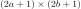
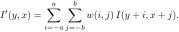
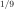
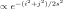
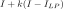
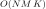
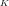
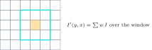
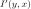

over the image and replaces each pixel by the weighted sum of its neighbourhood,
over the image and replaces each pixel by the weighted sum of its neighbourhood,  ; averaging kernels smooth (low-pass), kernels with zero sum enhance differences (high-pass).
; averaging kernels smooth (low-pass), kernels with zero sum enhance differences (high-pass).Method
For a

kernel:
- mean (box)
 : all weights
: all weights 
: removes noise, blurs edges; - Gaussian: weights

: smooth, isotropic; - high-pass: identity minus low-pass, e.g. centre 8, others −1 (weights sum to 0);
- high-boost / sharpening:

.
Borders need a policy (replicate, mirror, zero, or discard). Cost

for
kernel weights; large kernels are cheaper in the frequency domain.Example
from scipy import ndimage
mean3 = ndimage.uniform_filter(band.astype(float), size=3)
gauss = ndimage.gaussian_filter(band.astype(float), sigma=1.5)
hp = band - mean3Picture


is the weighted sum of the input pixels in a window centred on it.Intuition
Each output pixel asks its neighbours for a weighted vote: equal votes smooth, opposing votes highlight differences.
Pitfall
Linear smoothing cannot tell noise from edges: it blurs both. Edge-preserving filters (median, adaptive speckle filters) are nonlinear.